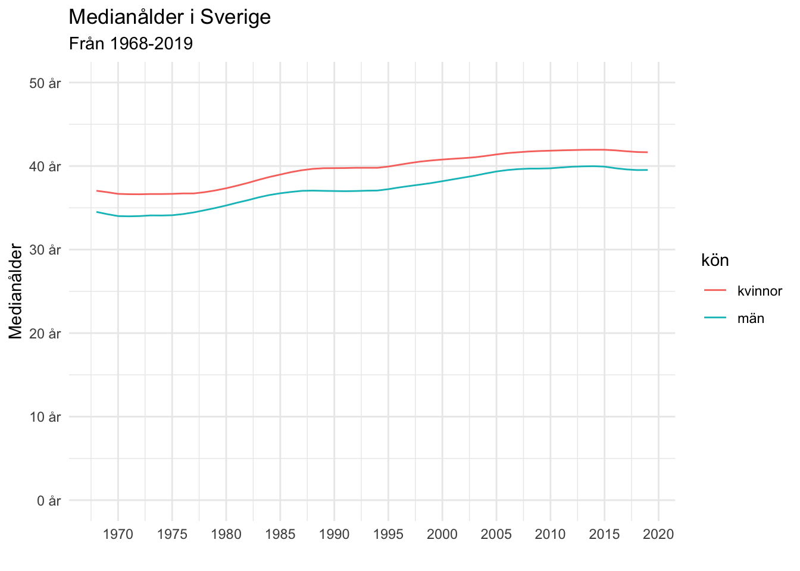

library(pxweb)
pxweb_interactive()Visste du att du kan hämta data direkt från SCB, Statistiska centralbyrån till R?
Du behöver alltså inte gå in i statistikdatabasen och ta ut en ny Excel-tabell varje gång du ska uppdatera SCB-statistik utan kan istället låta paketet pxweb av Måns Magnusson ställa frågor mot SCB:s API och få koden för det. Perfekt om ens verksamhet använder offentlig statistik återkommande.
Med den interaktiva funktionen pxweb_interactive() kan vi prata med SCB:s (och flera andra nationella statistikcentraler) API.
Jag brukar först använda statistikdatabsen för att hitta det jag söker och sedan navigera mig till det genom pxweb, som följer samma struktur som hemsidan.
Du laddar ner paketet med install.packages("pxweb").
pxweb 0.13.1: R tools for the PX-WEB API.
https://github.com/ropengov/pxwebNär du klickat dig fram till den statistik du är intresserad av får du koden för att ladda ner data programmatiskt.
pxweb_query_list <- list("Kon"=c("1", "2"),
"ContentsCode"=c("000000MD","000000ME"),
"Tid"=c("1968","1969","1970","1971","1972",
"1973","1974","1975","1976","1977","1978",
"1979","1980","1981","1982","1983","1984",
"1985","1986","1987","1988","1989","1990",
"1991","1992","1993","1994","1995","1996",
"1997","1998","1999","2000","2001","2002",
"2003","2004","2005","2006","2007","2008",
"2009","2010","2011","2012","2013","2014",
"2015","2016","2017","2018","2019"))
# Download data
px_data <-
pxweb_get(url = "http://api.scb.se/OV0104/v1/doris/sv/ssd/BE/BE0101/BE0101B/BefolkMedianAlder",
query = pxweb_query_list)
# Convert to data.frame
px_df <- as.data.frame(px_data, column.name.type = "text", variable.value.type = "text")Nu kan vi visualisera data, exportera den eller göra vad vi nu vill med den.
library(tidyverse)
library(glue)
library(scales)
min_år <- min(as.numeric(px_df$år))
max_år <- max(as.numeric(px_df$år))
px_df %>%
mutate(år = as.numeric(år)) %>%
ggplot(aes(år, Medianålder, color = kön)) +
geom_line() +
labs(
title = "Medianålder i Sverige",
subtitle = glue("Från {min_år}-{max_år}"),
x = ""
) +
scale_y_continuous(limits = c(0, 50), labels = number_format(suffix = " år")) +
scale_x_continuous(breaks = pretty_breaks(10)) +
theme_minimal()